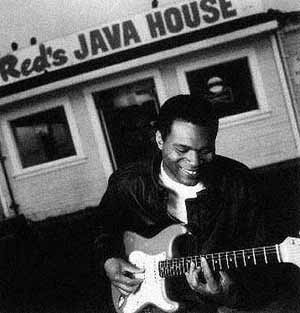

Мы продолжаем представлять вам претендентов на премию "Грэмми" в различных номинациях. Сегодня это Роберт Крэй со своим современным блюзовым альбомом "Sweet Potato Pie". Номинанты, а не победители, часто являются более интересной темой для разговора и сравнения различных мнений именно в силу своей небесспорности и, в чем-то, несовершенства.
До неприличия "красивый" Крэй
На редкость противоречивые чувства приходят после прослушивания альбома "Sweet Potato Pie". Ну почему его выдвинули на "Грэмми" — ясно: сделан он по-американски образцово: несколько бесспорных хитов разбавлены просто крепко сработанными эстрадными вещами и даже несколькими песнями явно в стиле соул. И что в результате? Массовый слушатель в восторге, любители более-менее аутентичного блюза слегка морщатся и воротят нос, но... не возражают особенно против номинации на престижнейшую музыкальную премию.
А происходит такое потому, что профессионализм и блюзовые корни Роберта Крэя абсолютно очевидны и делают этот альбом по меньшей мере нескучным и легко воспринимаемым. Он умудряется работать где-то на стыке блюза и соул, что, конечно, идет на пользу его популярности, но отталкивает ценителей "чистого" стиля. И действительно, его гитара может в одной вещи выдать потрясающий блюзовый чувственный драйв ("Back Home") и тут же в следующей ("Save It") исполнить простенький навязчивый мотивчик.
Однако чего нельзя отнять ни у этого самого мотивчика, ни у красивых околоблюзовых баллад ("The One In The Middle"), так это легкости и гармоничности звучания. Поразительная сбалансированность аранжировок — пожалуй, самый большой "конек" Крэя. Вы, может быть, и не будете в бешеном восторге от этого альбома, но по сравнению со многими другими современными блюзовыми дисками впечатление от него остается очень цельным и ровным. Да, шершавости и даже грубости Тадж Махала (Taj Mahal), обошедшего его в борьбе за "Грэмми", ему явно не хватает, но ведь это только на слух просвещенного ценителя, коих, согласитесь, далеко не подавляющее большинство. Участие в проекте духового дуэта "The Memphis Horns" тоже положения не спасает: они играют в основном простые риффы и дополнительной джазовости вносят очень мало.
Любопытный штрих: этот альбом благосклонно принимается любителями рока, которые обычно склонны обвинять блюз в монотонности и примитивизме. Такой факт — еще одно подтверждение явному уклону Крэя в область, чуждую "правоверному" блюзмену. Собственно говоря, закрадывается "крамольная" мысль: а был ли вообще мальчик, в смысле блюз, в основе этого проекта? Лично мне видится, что хитрый Крэй всех надул: попасть в номинацию на "Грэмми" по стилю соул или какому-нибудь чисто эстрадному направлению ему явно не светило (там своих "китов" хватает), а так "причесал" песни немного на другой бок, и, глядишь, вышло оригинально и очень даже конкурентоспособно.
Почему еще создается такое впечатление? Наверное, потому, что на предыдущих дисках гитарист и певец все же больше соответствовал "высокому званию" блюзового исполнителя. Какой-то он был не такой красивый и прилизанный (в музыке, конечно) и больше внимания уделял соответствию этой музыки вокалу. У него высокий сильный, настоящий "черный" голос, но в последнем альбоме он часто конфликтует с аккомпанементом: последний чересчур благодушен и благопристоен для страстной манеры пения Крэя.
Странно, но в итоге я так и не понял, понравилась мне пластинка или нет. Равнодушной точно не оставила, но стану ли я ее слушать еще раз? Наверное, да. Попсовость попсовостью, а все-таки качественная легкая музыка нужна даже ярым поклонникам авангарда, к коим я себя могу причислить. Если придется выбирать между Уитни Хьюстон и Робертом Крэем, то я обеими руками за Крэя. Кто никогда(!) не слушает никакой(!) эстрады, может первый бросить в меня камень.
Напоследок попробую выделить наиболее понравившиеся вещи. На первом месте заглавная "Nothing Against You" с изумительным неторопливым, но заставляющим вздрагивать пальцами и притопывать пяткой гитарным соло. На втором — "Back Home", а может быть, именно ее стоило поставить вперед? Во всяком случае, это — настоящий блюз, без всяких скидок: вокал проникает в душу и медленно рвет ее на части, а затем собирает вновь. Третью позицию можно отдать "Jealous Minds", ну и больше, пожалуй, явных удач в альбоме нет. Все остальное — чересчур гладко, стильно и красиво.
Борис АРКАДЬЕВ
Пересахаренный пирог
Вкусы американцев понять жителям иного континента порой очень сложно. Наиболее отчетливо это проявляется во время проведения всевозможных опросов, преследующих цель определить лучшего. И очень часто лучшим американцы называют то, что в Европе проходит почти незамеченным.
Так вот — с моей (европейской) точки зрения данный альбом Крэя, номинированный на "Грэмми", интересен, но не более того.
Вообще, если верить блюзовому тому энциклопедии популярной музыки издательства "Guinness", Роберта Крэя уже при жизни называют гением блюзовой гитары. Он действительно один из наиболее известных музыкантов блюза среднего поколения (род. в 1953 г.), хотя слава пришла к нему только в возрасте 30 лет. В каком-то из опросов его альбом "Strong Persuader" 1987 года был назван лучшим блюзовым альбомом двух десятилетий. Его лично приглашал на совместные выступления Эрик Клэптон. Собственно, уже только эти приведенные факты позволяют говорить о том, кто такой Роберт Крэй — музыкант, которого нельзя однозначно относить только лишь к блюзовым исполнителям. В его композициях полно всего того, от чего исполнители традиционного блюза шарахались бы, как я это делаю по отношению к музыке Буйнова или Овсиенко. Нет, на данном альбоме, например, нет ни одной рэповой фразы или чего-то такого, что при каждом удобном случае можно назвать "кислым" джазом. Но недаром альбом этот номинировался в категории "Лучший современный блюзовый альбом". Крэй активно использует элементы рока и соула — тех жанров музыки, которые сами по себе способны поглотить многое из других направлений.
Вот почему, по всей вероятности, альбом этот не произвел на меня большого впечатления. Он показался мне не слишком цельным по стилистике, лишенным некоего внутреннего стержня, хотя, признаюсь, в принципе нельзя упрекать проект за то, что одна композиция не походит на другую. И некоторые производят-таки эффект, как, например, "Trick Or Treat", следует думать, Отиса Реддинга. А вслед записана композиция самого Крэя "Simple Things", которая прямо-таки поражает банальщиной и чуть ли не откровенной попсовостью. К слову, это вовсе не советская попса, это добротно сделанный продукт, который сам по себе, вне рамок данной программы, вообще выглядит очень прилично. Но и в контексте репертуара альбома "Sweet Potato Pie", как ни странно, он прозвучал вполне органично. Иными словами, присущая Крэю попсовость, которая ощутима практически во всех композициях альбома, — это, с одной стороны, его характерная стилистическая примета, а с другой, — тот признак, благодаря которому Крэй и относится не к традиционным, а к современным представителям блюза.
Как мне думается, именно вот эта красивость стилистики Крэя и стала тем препятствием, которое не позволило мне безоглядно воспринять его музыкальные предложения. Это как в случае с другим гитаристом — Джорджем Бенсоном. Кто-то до сих пор относит его к джазовым музыкантам, хотя джаз в музыке Бенсона присутствует сегодня лишь в качестве одного из элементов. А исполняет он в целом ту же популярную музыку очень высокого качества, которая однако представляется куда менее интересной, чем его ранние собственно джазовые программы.
Бесспорный плюс альбома Крэя — очень активное присутствие в нем "The Memphis Horns": трубача Уэйна Джексона и тенор-саксофониста Эндрю Лава. Вдвоем они создают такое звучание, что порой кажется, будто играет пачка настоящего бэнда. И если бы вся программа была исполнена с такой энергией и напором, с которыми отработали "The Memphis Horns", думаю, эффект от нее был бы куда большим. Роберт Крэй — музыкант очень высокого уровня, но вся прелесть американского блюза в том, что он, Крэй, — не единственный.
Дмитрий ПОДБЕРЕЗСКИЙ
К вопросу о концентрации блюза
Лето. Жарко. В магазинах бойко расходятся прохладительные напитки, в том числе — соки. Их много на полках, в разнокалиберных ярких упаковках, с надписями на разных языках. В большинстве магазинов, даже внешне респектабельных, этим коробочкам сопутствует стандартный ярлычок — "сок". Но опытный покупатель хорошо знает, что, в зависимости от концентрации, под этим ярлычком могут скрываться по крайней мере три типа жидкостей — "дринк" (где сока очень мало), "нектар" (где его побольше) и, наконец, настоящий стопроцентный сок.
А теперь, после краткого экскурса в сферу товароведения, пора и вернуться к нашей основной теме. Итак, номинант Грэмми 1997 года в области современного блюза, альбом "Sweet Potato Pie" Роберта Крэя. Кстати, что это за понятие такое — "современный блюз"? А что, есть несовременный? Да, косвенно подсказывают устроители конкурса Грэмми, есть — он, чтобы никого не обижать, именуется в номинациях традиционным. В чем же его несовременность? Ответ, думаю, напрашивается сам во всей своей парадоксальности: в нем больше... блюза! Концентрация! Насыщенность другая! Не все желудки (простите, уши) воспринимают сок (простите, блюз) в такой интенсивной концентрации. Им нужен уже, так сказать, блюзовый нектар, для чего и изобретена категория "современный блюз".
Так что же, это второй сорт? Отнюдь. И Роберт Крэй со своей последней работой лишний тому пример. Чуть ли не все "музыкальные каши" в Штатах приправляют определенной толикой блюза. И потому категория "современный блюз" представляется мне наиболее "резиновой", обладающей наиболее размытыми границами. Не имел пока удовольствия послушать победителя-97 в этой номинации Тадж Махала (Taj Mahal), думаю, он не забыл увлечения фолк-музыкой и роком времен своей молодости. А вот Крэй, прослушанный благодаря редакционному заданию, прекрасно "улегся" в рамки изложенных выше тезисов. Вам нравится рок? — Ставьте "Save It" и "Jealous Minos". Хотите что-то в духе музыки соул? — К вашим услугам "Do That For Me". Нужен ритм-энд-блюз с сочными духовыми? — Пожалуйста, "Trick Or Treat" или "Simple Things" (браво, Уэйн Джексон (труба) и Эндрю Лав (тенор-саксофон). Можно даже услышать что-то в духе кантри и, одновременно, поп-рока — "The One In The Middle". Ну а если вам ближе исконно блюзовые интонации — "Nothing Against You", "Back Home" и "I Can`t Quit" не разочаруют вас, как не разочаровали меня. Крэй — виртуозный вокалист и хороший гитарист (это касается альбома в целом). Он очень тонко чувствует и сочиняет блюз.
Все три последними указанные вещи для меня — безусловные фавориты диска, причем они написаны им самим. Но альбом в целом, на мой вкус, чересчур пестр. Может быть, это-то и помешало ему выиграть Грэмми?
...Нектар не хуже сока, это просто другой напиток. Кому что нравится.
Леонид АУСКЕРН
А был ли блюз?
Один мой знакомый, очень консервативный блюзмен, делит всю без исключения музыку на "блюз" и "не блюз". Так вот, альбом Роберта Крэя, вероятно, не получил бы от него однозначной оценки.
Мы же, судьи не столь категоричные, из уважения к профессионалам, присуждающим "Грэмми", согласимся признать, что все это — блюз, — только вот... На мой взгляд, композиции "Simple Things" и "Hot Bad For Love", где даже гармония не сохраняет верность стилю, вырванные из контекста альбома не произвели бы никакого блюзового впечатления. "Do That For Me" и "The One In The Middle" — тоже малоинтересны...
И дело даже не в сохранении стиля. Ударная тройка совершенно традиционных блюзов — "Trick Or Treat", "Jealous Minds" и "I Can't Quit" (как, впрочем, и "Save It" с превеселым диско-проигрышем) — радует ухо ожидаемым звучанием, но и сказать тут особенно нечего, а все-таки, речь идет о современном(!) блюзовом альбоме. Зато "Little Birds", напоминающая рок-балладу, интересна тем, что в ней есть развитие музыкальной мысли: здесь царит обманчивый покой, который то и дело нарушает метрическая сбивка, всплески клавишных, а динамика вокала — почти как у Роберта Планта.
Приятному отдыху для ушей послужили открывающая альбом композиция "Nothing Against You" и третья, "Back Home". Первая — с оттенком грустноватого рэггей, а вторая — печальная песнь с однообразным убаюкиванием — раскачиванием на двух аккордах. Вообще же альбом начинается многообещающе, но без суеты: короткое весомое вступление, в унисон с духовыми звучащее почти оркестрово, и — внезапный спад в прозрачное бульканье гитары, на волнах которого вибрирует голос Крэя, добрую половину композиции занимает темпераментное соло гитары. Заключительная точка альбома также вполне убедительна... "I Can't Quit" — очень энергичный блюз, где совсем по-"киношному" (имеется ввиду группа "Кино") долбит ритм-группа и старательно хлопочут клавиши.
Но обещание, данное гитарой Крэя в первой композиции — продолжать в том же духе и, вообще, самое интересное впереди — явно не выполняется, это ее соло сказывается едва ли не самым продолжительным в альбоме. Впрочем, ни к гитаре, ни к голосу Роберта Крэя у меня претензий нет, напротив, именно его личность и является, по-моему, гарантом стильности всей музыки, остальные же музыканты служат фоном для него, даже не пытаясь высказаться самостоятельно. И если второстепенность клавишных еще можно понять (все-таки не джаз), то скромная роль духовых вызывает сожаление. Труба и саксофон служат в альбоме либо связкой между квадратами, либо — скупым комментатором в блюзовом повествовании, то есть "забивают гвозди" в музыкальную ткань, которую ткут голос, гитара и клавиши.
Думаю, этот альбом не привлек бы к себе пристального внимания, если бы не был выдвинут на премию "Грэмми" (не вокал, не гитара, а именно альбом). В связи с этим, естественно, возникает вопрос: а что же вообще такое современный блюз? Блюз, который был выстрадан жестоко угнетаемыми неграми более ста лет назад; прочувствованная импровизация, обретшая в дальнейшем четкую форму, но сохранившая содержание — любовь, одиночество, покинутый дом и т.д. С годами форма усложнялась, приобретало все большее значение мастерство исполнения, темы перестали быть столь безнадежными. Но основа все же осталась, иначе почему бы огромное количество самых разных музыкантов тянуло именно к блюзу?
Конечно, в альбоме "Sweet Potate Pie" блюзовость присутствует, но в столь незначительной степени, что, не зная истоков жанра, все композиции здесь при желании можно было бы "разбросать" по другим стилям. И никто бы не предъявлял тогда к ним претензии, музыка-то приятная. Но не более.
Анна АЛАДОВА
Перепечатано из журнала Jazz-квадрат.